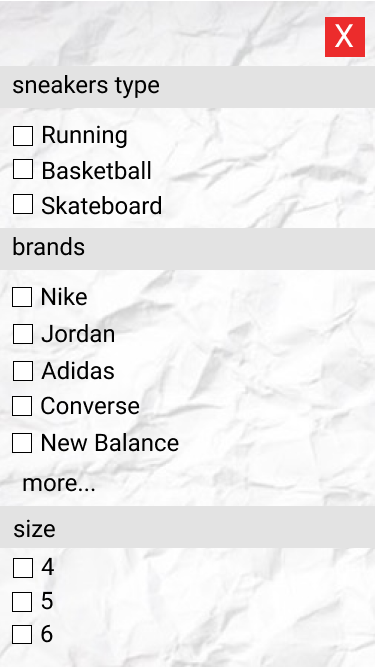
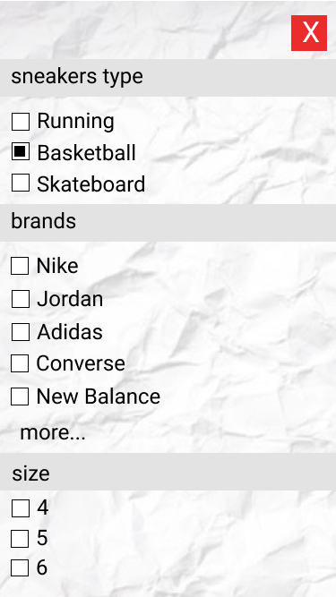
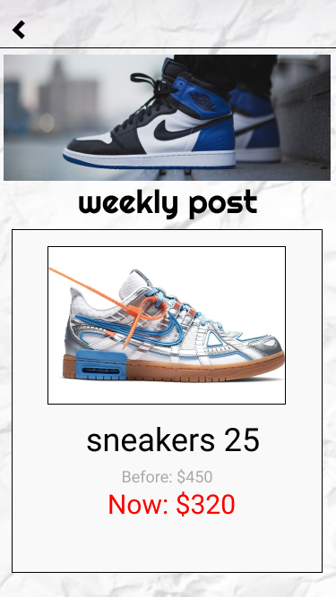
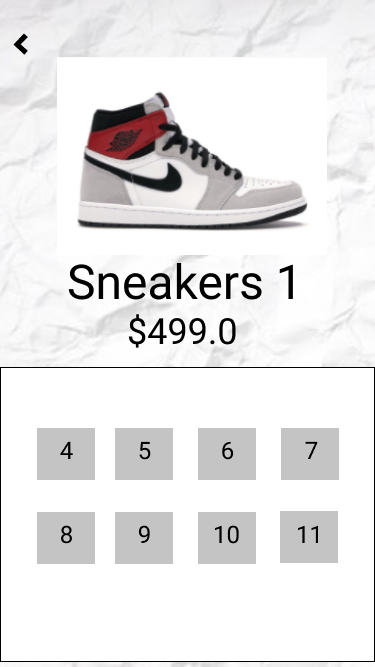
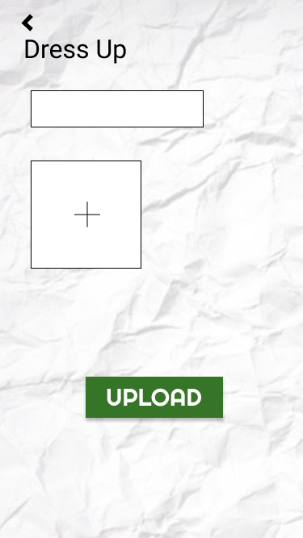
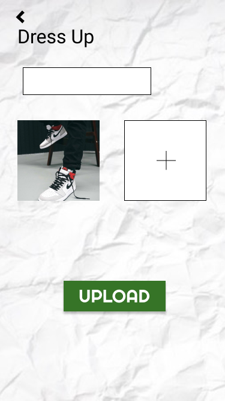
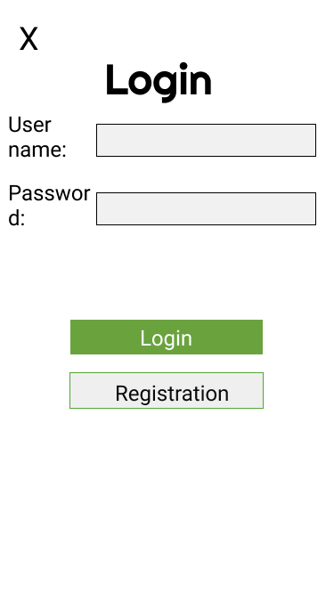
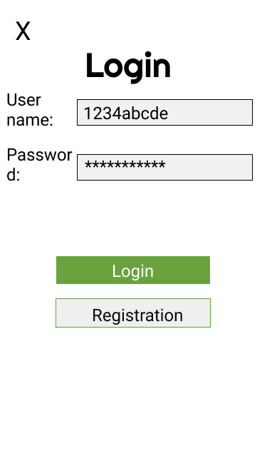

First, we held a group meeting to discuss the theme of the project. After discussion, we finally chose the app for selling sneakers, because sneakers are not only the common hobby of our team members, but also the market of this kind of APP in Australia isalmost blank.Then we got into the planning phase and discussed the features needed for the app.This step is not very smooth, because we have never done this kind of project before, so we can only determine the function we need by analyzing other apps ofthe same type.Over time, we listed the necessary features, as well as some extensions.Then we listed the steps required for the development of each function, among which the time planning was a difficult problem for us, because we did not know how to manage the time properly. This problem was clearly exposed in the later steps.Then we started developing the project. In the part of the website, some of our team members are good at web page programming, so we went smoothly in this part, but we did not know how to upload to AWS. However, this problem was solved in a very short time.At the same time, we were developing the APP. We divided tasks equally among each team member and insisted on meeting at least once a week to exchange problems we encountered.But the process is not very well, first of all, we don't know how to design animationwas solved only after this on consulting a large amount of data, but it took us a lot of time to learn, cause is not completed within the prescribed period of time needed for the project, which affect the later development stage, cause the backlog of projects, and even some demand missed the delivery time stipulated by the customer, the problem continues to affect our to the end of the project, we regret that we failed to complete the scoring system and shielding word check system. We have also made changes to the project content. For example, we planned to allow QR code functionality during the project planning phase, but that was so much beyond our capabilities that we had to replace it with another achievable feature.In this project, we learned a lot of experience and knowledge, especially project management.At the same time, we have learned many valuable lessons, especially time management.This will be of great help to our future projects, so that we can finish themmore efficiently.
MVF 1:The app will support 3 different categories for different types of shoes: skate shoes, basketball shoes and runners.
 MVF 2: Admin is able can upload weekly posts at the banner section of the app.
MVF 3: Enter the sneakers' detail page, users can choose to buy different sizes of sneakers.
MVF4: Users are able toupload their dress up photo for sneakers.
 MVF5: Users can login
 Description: When users want to search for the sneakers they want, they can click the search button in the navigation bar, and then enter the name of the shoes, so that they can quickly find the sneakers they want
User Story: As a user, I want to search a pair of sneakers, soI can find the shoes I want quickly
Mock-up:
Description: After the user selects a pair of shoes, if they don't want to buy them right away, they can put the sneakers in the cart until they want to buy them, and they can also remove the sneakers from the cart
User Story: As a user, I want to put some sneakers into a shopping cart, so thatI donothave to look for them again when I need to buy them
Mock-ups:
Description: There is a sort button in the upper left corner of the list of sneakers. Users can reorder the sneakers by price, so that they can find the right shoes, and they can also sort the sneakers after they have selected the type of sneakers.
User Story: As a user, I want to sort the sneakers by price, so that I canfind sneakers at the right price more quickly.
Mock-ups: